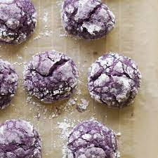

What are Ube Cookies?
Also known as purple yam crinkles, are Filipino cookies made from purple yam (known as ube), flour, eggs, baking powder, butter, and sugar. Characteristically, they are deep puirple in color and are typically rolled in powdered sugar. If you would like to try these Filipino cookies, check our the recipe below!
Ingredients
In order to make ube cookies, you will need:
- All purpose flour
- Cornstarch
- Baking powder
- Salt
- Unsalted butter
- Granulated sugar
- Brown sugar
- Ube jam or ube halaya
- Eggs
- Ube Extract
Steps
- In a medium sized bowl, whisk all-purpose flour, cornstarch, baking powder and salt. Set aside.
- Using a stand mixer fitted with the paddle attachment or in a large bowl using a handheld electric mixer, beat unsalted butter, granulated sugar and brown sugar on med-high speed until well blended.
- Add ube jam and ube extract and continue beating until incorporated.
- Add eggs and beat until combined
- Add your flour mixture to your ube mixture in thirds and beat until no more streaks of flour remain. Remember to scrape the bottom and sides of your bowl in every step.
- When ready, preheat your oven to 350F and line a baking sheet with parchment paper.
- Scoop about 2 tablespoons of dough and roll into balls using your hands. Place on cookie sheet with about 2 inches of space around each cookie.
- Bake for 10-11 minutes or until the cookies are just set.
- Remove from oven and allow to cool completely on the pan.
- Optional but highly recommended step: as soon as you remove your cookies from the oven, gently press a few pieces of white chocolate chips on top of each cookie. This makes them prettier but note that this adds to their sweetness as well.
Return to top
Return to recipe page